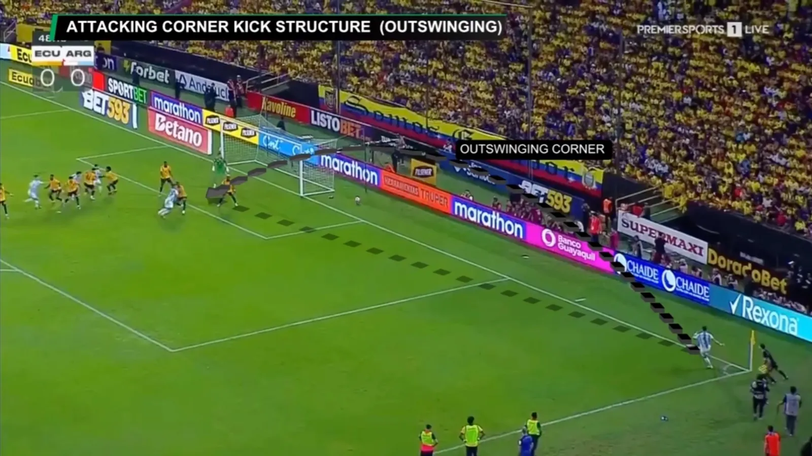
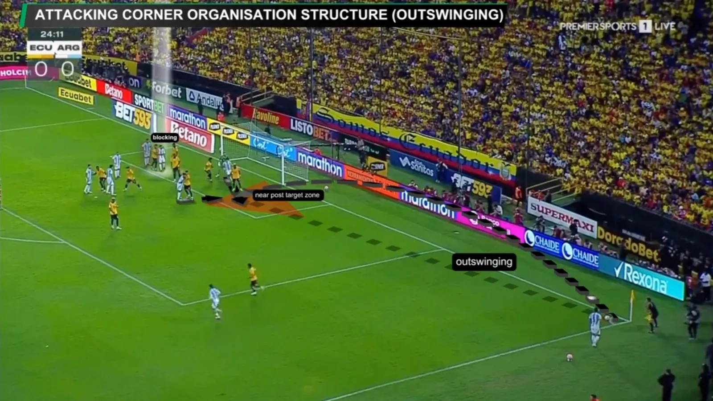
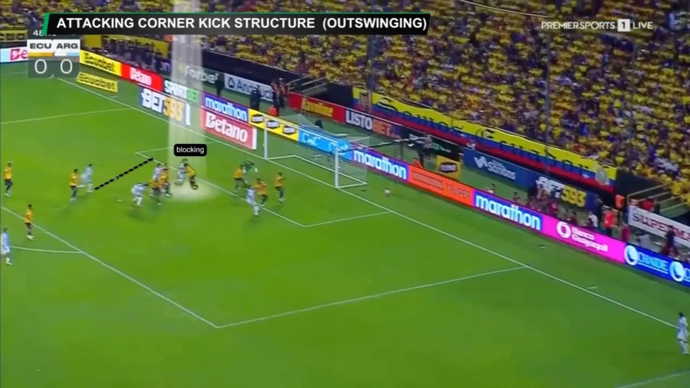
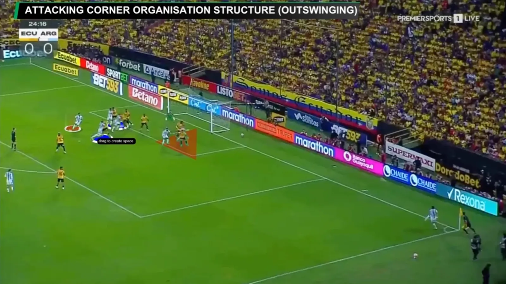
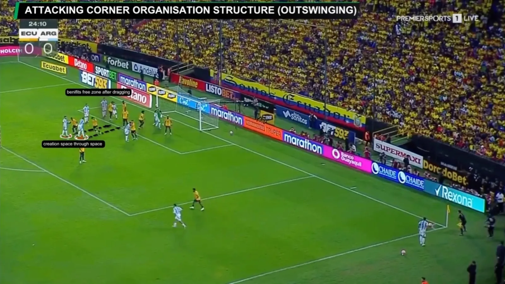
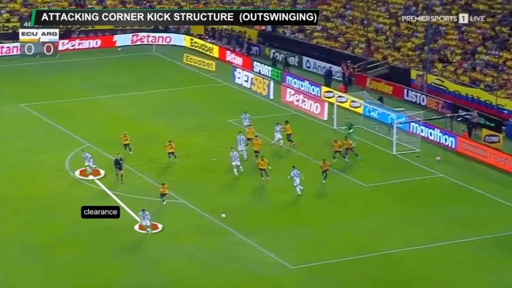

Set pieces will again be one of the key weapons in tournament football, and the Argentina national team is a strong example of how organisation, repetition and individual quality come together in both attacking and defending corners.
Structure: occupy the key zones
In attacking corners, Argentina uses a clear structure but with constant movement inside the box. Usually five or six players occupy attacking zones, adjusting their positions depending on where the ball will be delivered. The main focus is the near post, the penalty spot and the far post, with coordinated runs designed to create separation at the right moment.
Delivery: stay unpredictable
The delivery options are equally important. With players like Lionel Messi and Alexis Mac Allister, Argentina can vary between inswinging and outswinging corners, as well as short combinations that reset the angle before crossing again. This flexibility helps them stay unpredictable.


Blocking: win the first contact
One of the key details is the use of blocking movements inside the box. Players not only attack the ball, they also create small delays for defenders, making it harder for them to attack the same space at full speed. These actions often decide who gets the first contact.



Second balls
Two players stay outside the box, ready for the clearance and to protect the team against the counter-attack.

Defending corners
Defensively, Argentina uses a mix of zonal and man-to-man marking. The near-post zone is usually well protected, while other players focus on clearances and second balls. There is also clear attention to protecting transition moments once the ball is cleared.
When opponents use short corners, Argentina can sometimes be forced into quick adjustments, especially when marking responsibilities shift in a short space of time.
Preparation makes the difference
What stands out is their consistency in preparation. Both attacking and defensive structures are clear, but flexible enough to adapt depending on the opponent.